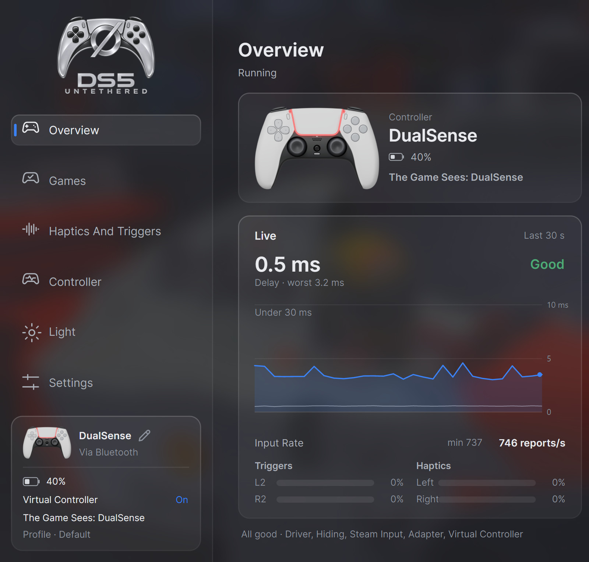

DS5 UntetheredDualSense haptics and adaptive triggers over Bluetooth on PC
DS5 Untethered is a free, open-source Windows app. Games see a wired controller, you play without the cable.

The problem
On PC, a DualSense's haptic feedback and adaptive triggers only work over a USB cable. Connect it over Bluetooth and games see a different device, so both are gone.
How it works
The app connects to your controller over Bluetooth.
It creates a virtual DualSense on the same PC that looks plugged in. Games talk to that one.
The game's haptics, trigger effects and lights are passed on to the real controller over Bluetooth.
DS5 Untethered uses two free drivers, usbip-win2 and HidHide. The Setup page checks for them and walks you through pairing.
What works
Tested on a real controller
- Game haptics
- Adaptive triggers
- Lights
- The controller's microphone and speaker
- Bluetooth adapter test
- DualShock 4 controller type (verified in one game so far)
- Mouse mode: touchpad pointer, one click per press, Right Click setting, a short PS press turns it on, Back To Game
- In-app updates
In the app, tested in code, not yet verified on hardware
- Profiles per game
- Trigger and haptics strength
- Button remapping
- Gyro aim
- Mouse mode with a stick as the pointer, and its button mapping
- Light effects
- Games page: supported and unsupported games found from Steam and Epic
- Turn Sound Into Haptics for games without DualSense support
- Hiding the real controller with HidHide
- Reconnection, battery warning, idle power-off
- Microphone button light and notifications, controller speaker in games
- Live link quality
- DualSense Edge, up to four controllers that are remembered and can be named
- Controller type per game: DualSense, DualShock 4 or Xbox 360
Screenshots


Download DS5 Untethered
DS5 Untethered is on the repository's Releases page as an installer and as a zip. Both include .NET; nothing else needs to be installed for the app itself.
- Download the installer (
DS5-Untethered-<version>-Setup.exe, per-user, no administrator rights) or the zip (DS5-Untethered-<version>-win-x64.zip, unzip anywhere and runKopru.App.exe). - The build is not signed, so Windows SmartScreen may warn: choose "More info", then "Run anyway".
- On start, the Setup page checks for the two drivers, usbip-win2 and HidHide, and opens their official download pages (their installers need administrator rights). Both drivers are required.
- The Setup page then guides Bluetooth pairing of the controller.
Requirements
- Windows 10 or 11
- A Bluetooth adapter, built-in or USB
- usbip-win2 and HidHide, both free
Questions
Do DualSense haptics and adaptive triggers work over Bluetooth on PC?
Not by themselves: games only send them to a controller connected with a cable. With DS5 Untethered running, games see a wired DualSense, and their haptics and trigger effects reach the controller over Bluetooth.
Do I need a dongle or extra hardware?
No special hardware. The Bluetooth already in your PC or an ordinary USB Bluetooth adapter is enough. The Setup page tests the adapter.
Does it add input lag?
In a 60 second test with one controller and one adapter, input was relayed at about 750 Hz with low added latency and no loss. The Overview page shows the delay live, so you can check your own setup.
Which games does it work with?
Games that support the DualSense's haptics or adaptive triggers over a USB cable. Known ones are listed on the app's Games page, under Supported. Games without DualSense support can use the classic rumble settings or Turn Sound Into Haptics.
Is it free?
Yes. DS5 Untethered is free and open source under GPL-3.0, and there is no paid version.